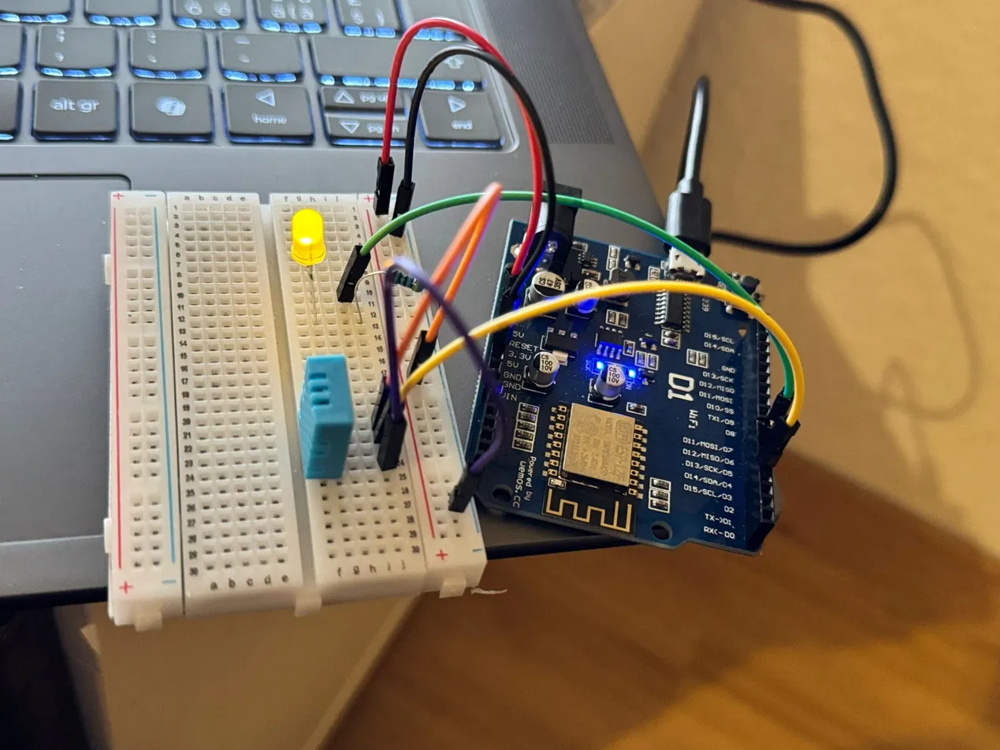
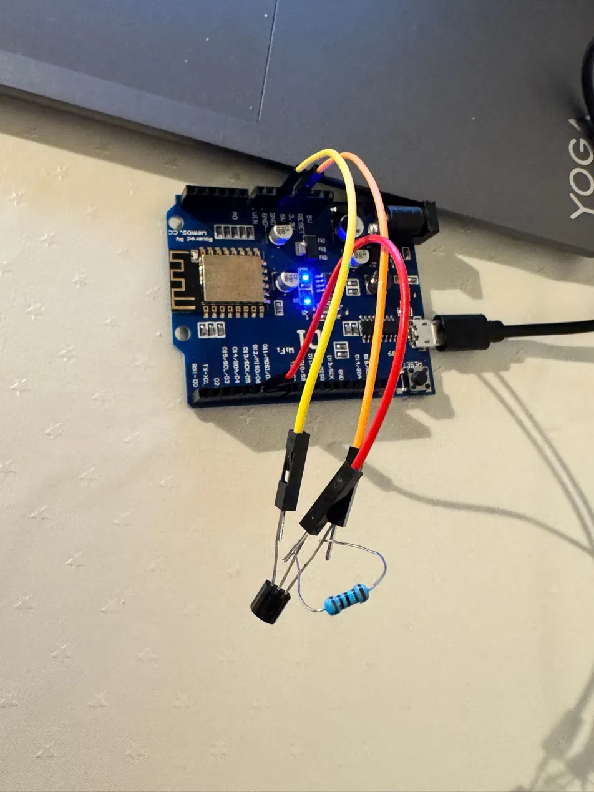
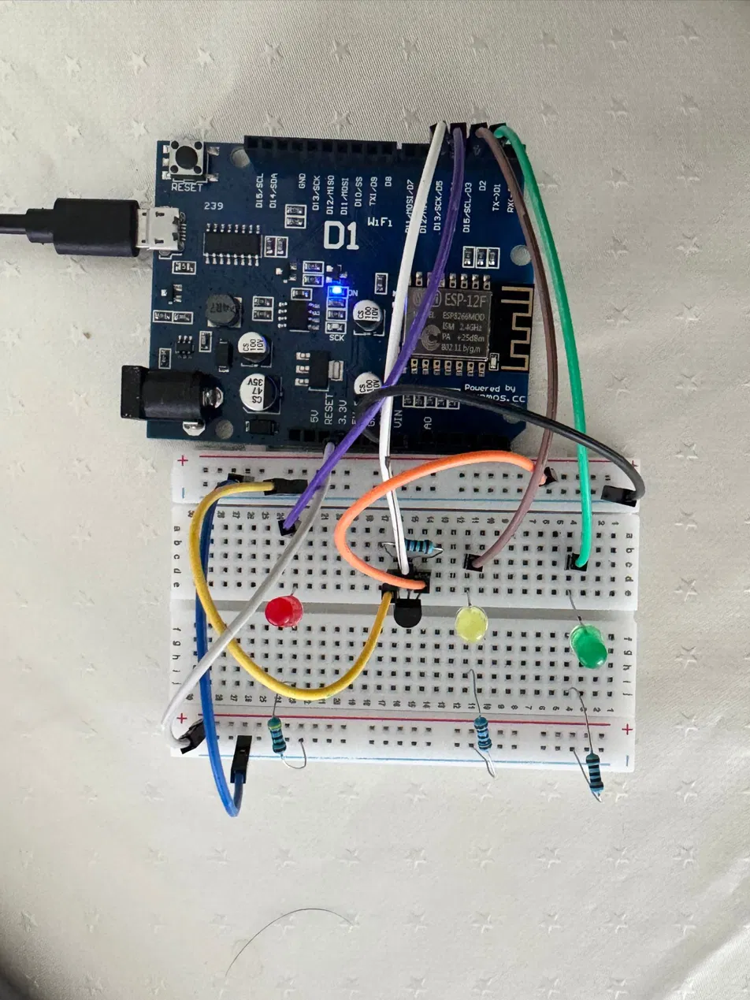

سیستملرنی باشقریش
- ویندوز سېرور
- اکتیو دیرېکتاری
- کمپیوترلرنی باشقریش
اۉقییاپمن · عملی تجربه آرتتیریشنی ایستهیمن
سلام، مېن
برن شهریدهگی سېاېسبې کمپیوتر مکتبیده اۉقییاپمن. ویندوز سېرور، اکتیو دیرېکتاری و پاورشېل یاردمیده ایشانچلی کمپیوتر سیستملرینی قوریشنی اۉرگنیاپمن.
سولوتورن · برنده تعلیم
مېن سویسریهنینگ برن شهریدهگی سېاېسبې کمپیوتر مکتبیده پلتفارمه یرهتیش بۉییچه کسبی تعلیم آلیاپمن. بلخ اونیوېرسیتېتیده اقتصادیات بۉییچه لیسانس درجهسینی آلگنمن. افغانستانده ایشلرنی اویوشتیرش و مشتریلرگه خدمت کۉرسهتیش بیلن شوغوللنگنمن. ایککی مینگ یگیرمه اوچینچی ییلی سویسریهگه کۉچیب کېلگنمن.
سېرورلر، ترماقلر و تشکیلاتلر ایشینی تأمینلهیدیگن سیستملر مېنی قیزیقتیرهدی. بۉش وقتیمده اۉز اوی لابراتاریهمده میکروکنتروللېرلر و سېنسارلر بیلن تجربه اۉتکهمن. عملی ایش آرقهلی اۉرگنیشگه ایشانمن.
سېاېسبې · برن
بلخ اونیوېرسیتېتی

عملی تجربهلر
اوی لابراتاریهمده قوریلمهلر و سېنسارلرنی دستورلشنی اۉرگنیاپمن. وېماس دی بیر تختهسی، سېنسارلر و اېکرانلر بیلن آردوینو دستورلش محیطیده سی پلس پلس تیلیده ایشلهیمن.


۰۴ /
سوالینگیز، لایحهنگیز یاکی عملی تجربه آرتتیریش امکانیتی بارمی؟ سیزدن خبر آلیشنی ایستهیمن.
سولوتورن، سویسریه